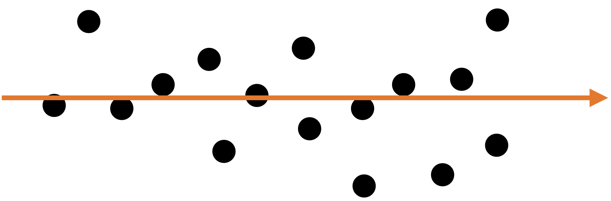

Principal Component Analysis
IN2004B: Generation of Value with Data Analytics
Agenda
- Introducción
- Dispersión en una o varias dimensiones
- Análisis de componentes principales
Introducción
Tipos de Aprendizaje
En ciencia de datos, existen dos tipos principales de aprendizaje:
Aprendizaje supervisado (supervised learning). En el cual tenemos varios predictores y una respuesta. El objetivo es predecir la respuesta usando los valores de los predictores.
Aprendizaje sin supervisión (unsupervised learning). En el cual solo tenemos varios predictores. El objetivo es descubrir patrones en sus datos.
Métodos de aprendizaje sin supervisión
Los Métodos de Agrupamiento tienen como objetivo encontrar subgrupos con datos similares en la base de datos.
El Análisis de Componentes Principales busca una representación alternativa de los datos para facilitar su comprensión cuando hay muchos predictores en la base de datos.
Aquí nos usaremos estos métodos en predictores \(X_1, X_2, \ldots, X_p\) que son numéricos.
Dispersión en una o varias dimensiones
Dispersión en una dimensión
El concepto de componentes principales requiere de entender la dispersión o variabilidad de los datos.
Supongamos que tenemos datos de un solo predictor.
[Observaciones de un predictor]

Dispersión en dos dimensiones

Capturando dispersión
En algunos casos, podemos capturar la dispersión de datos en dos dimensiones (predictores) usando una sola dimensión.
Capturando dispersión
En algunos casos, podemos capturar la dispersión de datos en dos dimensiones (predictores) usando una sola dimensión.
Un solo predictor \(X_2\) captura gran parte de la dispersión en los datos.
Veamos otro ejemplo
Veamos otro ejemplo
Un solo predictor captura gran parte de la dispersión en los datos. En este caso, el nuevo predictor tiene la forma \(Z_1 = a X_1 + b X_2 + c.\)

Alternativamente, podemos utilizar dos dimensiones alternativas para capturar la dispersión.

Un solo predictor captura gran parte de la dispersión en los datos. En este caso, el nuevo predictor tiene la forma \(Z_1 = a X_1 + b X_2 + c.\)

Un Nuevo Eje de Coordenadas
El nuevo eje de coordenadas esta dado por dos nuevos predictores \(Z_1\) y \(Z_2\). Los dos son dados por ecuaciones lineales de los nuevos predictores.
El primer eje \(Z_1\) captura gran porción de la dispersión, mientras que \(Z_2\) captura poca porción desde otro ángulo.
Los nuevos ejes \(Z_1\) y \(Z_2\) se llaman componentes principales.

Análisis de componentes principales
Reducción de Dimension
El Análisis de Componentes Principales (ACP) nos ayuda a reducir la dimensión de los datos.
Crea un nuevo eje de coordenadas en dos (o más) dimensiones.
Técnicamente, crea nuevos predictores combinando predictores altamente correlacionados. Los nuevos predictores no están correlacionados.
Preparación
Paso 1. Comenzamos con una base de datos con \(n\) observaciones y \(p\) predictores.
| Predictor 1 | Predictor 2 | Predictor 3 |
|---|---|---|
| 15 | 14 | 5 |
| 2 | 1 | 6 |
| 10 | 3 | 17 |
| 8 | 18 | 9 |
| 12 | 16 | 11 |
Paso 2. Estandarizamos cada predictor individualmente.
\[{\color{blue} \tilde{X}_{i}} = \frac{{ X_{i} - \bar{X}}}{ \sqrt{\frac{1}{n -1} \sum_{i=1}^{n} (X_{i} - \bar{X})^2 }}\]
| Predictor 1 | Predictor 2 | Predictor 3 | |
|---|---|---|---|
| 1.15 | 0.46 | -0.96 | |
| -1.52 | -1.20 | -0.75 | |
| 0.12 | -0.95 | 1.55 | |
| -0.29 | 0.97 | -0.13 | |
| 0.53 | 0.72 | 0.29 | |
| Suma | 0 | 0 | 0 |
| Varianza | 1 | 1 | 1 |
Paso 3. Asumimos que la base de datos estandarizada es una matrix \(\mathbf{X}\) de \(n\times p\).
\[\mathbf{X} = \begin{pmatrix} 1.15 & 0.46 & -0.96 \\ -1.52 & -1.20 & -0.75 \\ 0.12 & -0.95 & 1.55 \\ -0.29 & 0.97 & -0.13 \\ 0.53 & 0.72 & 0.29 \\ \end{pmatrix}\]
Algoritmo
El algoritmo de ACP tiene su origen en el álgebra lineal.
Su idea básica es:
Crear una matriz \(\mathbf{C}\) con las correlaciones entre los predictores de la matriz \(\mathbf{X}\).
Partir la matrix \(\mathbf{C}\) en tres partes que nos dan el nuevo eje de coordenadas y la importancia de cada eje.
Matriz de Correlación
Siguiendo con nuestro ejemplo, la matriz de correlación contiene las correlaciones entre dos columnas de \(\mathbf{X}\).

Partición de la matriz de correlación
La partición de la matrix \(\mathbf{C}\) se hace usando el método de descomposición por valores y vectores propios.
Las columnas de \(\mathbf{B}\) definen los ejes del nuevo sistema de coordenadas. Estos ejes se llaman componentes principales.
Los valores diagonales en \(\mathbf{A}\) definen la importancia individual de cada componente principal (eje).
Proporción de la dispersión explicada por el componente
\[\mathbf{A} = \begin{pmatrix} 1.60 & 0.00 & 0.00 \\ 0.00 & 1.07 & 0.00 \\ 0.00 & 0.00 & 0.33 \\ \end{pmatrix}\]
La proporción de la dispersión en los datos que es capturada por el primer componente es \(\frac{a_{1,1}}{p} = \frac{1.60}{3} = 0.53\). La proporción capturada por el segundo componente es \(\frac{a_{2,2}}{p} = \frac{1.07}{3} = 0.36\). La proporción capturada por el tercer componente es \(\frac{a_{3,3}}{p} = \frac{0.33}{3} = 0.11\).
Comentarios
Los componentes principales se pueden usar para aproximar una matriz.
Por ejemplo, podemos aproximar la matriz \(\mathbf{C}\) al fijar el tercer componente igual a cero.
\[\begin{pmatrix} -0.68 & 0.35 & 0.00 \\ -0.72 & -0.13 & 0.00 \\ 0.16 & 0.93 & 0.00\\ \end{pmatrix} \begin{pmatrix} 1.60 & 0.00 & 0.00 \\ 0.00 & 1.07 & 0.00 \\ 0.00 & 0.00 & 0.00 \\ \end{pmatrix} \begin{pmatrix} -0.68 & -0.72 & 0.16 \\ 0.35 & -0.13 & 0.93 \\ 0.00 & 0.00 & 0.00 \\ \end{pmatrix} = \begin{pmatrix} 0.86 & 0.73 & 0.18 \\ 0.73 & 0.85 & -0.30 \\ 0.18 & -0.30 & 0.96 \\ \end{pmatrix}\]
\[\approx \begin{pmatrix} 1.00 & 0.58 & 0.11 \\ 0.58 & 1.00 & -0.23 \\ 0.11 & -0.23 & 1.00 \\ \end{pmatrix} = \mathbf{C}\] ##
Las aproximaciones son útiles para almacenar matrices grandes.
Esto se porque solo necesitamos almacenar los valores propios más grandes y sus vectores propios correspondientes para recuperar una aproximación de alta calidad de la matriz completa.
Esta es la idea detrás de la compresión de imagenes.
Ejemplo
Considera una base de datos de las 100 canciones más populares en TikTok. Los datos están en el archivo “TikTok 2020 reduced.xlsx“. Se tienen observaciones de varios predictores como:
La bailabilidad describe qué tan adecuada es una pista para bailar basándose en una combinación de elementos musicales.
La energía es una medida de 0 a 1 y representa una medida perceptiva de intensidad y actividad.
El volumen general de una pista en decibelios (dB). Los valores de sonoridad se promedian en toda la pista.
El habla detecta la presencia de palabras habladas en una pista. Cuanto más exclusivamente parecida a un discurso sea la grabación.
Una medida de confianza de 0 a 1 sobre si la pista es acústica.
Detecta la presencia de una audiencia en la grabación.
Una medida de 0 a 1 que describe la positividad musical que transmite una pista.
APC en Python
El Scree o Summary Plot te dice la variabilidad capturada por cada componente. Dicha variabilidad es dada por el Eigen value o valor propio. De 1 a 8 componentes.
El primer componente abarca la mayor parte de la dispersión de los datos.
Esta gráfica se usa para definir el número total de componentes a usar.
TBD
Biplot
- Muestra las observaciones gráficas en el nuevo eje de coordenadas dado por los dos primeros componentes.
- Ayuda a visualizar los datos de tres o más predictores usando una gáfica de dispersión en 2 dimensiones.
- Una linea roja da las dirección de crecimiento de la variable etiquetada.
TBD